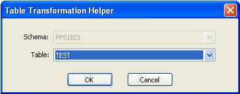
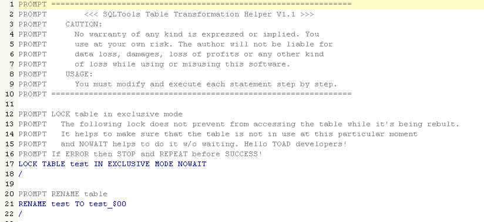

Tools -> Table Transformation Helper
Previous
Top
Next
The Table Transformation Helper allows you to modify a table, by simply loading a specific script. Then, each statement of the script must be modified and executed step by step.

